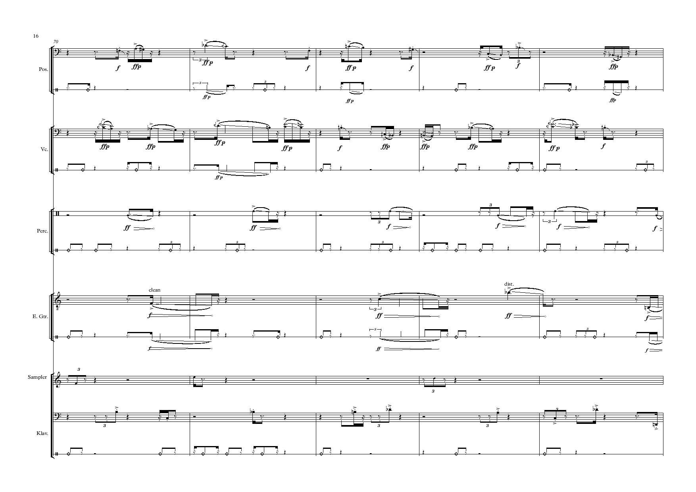
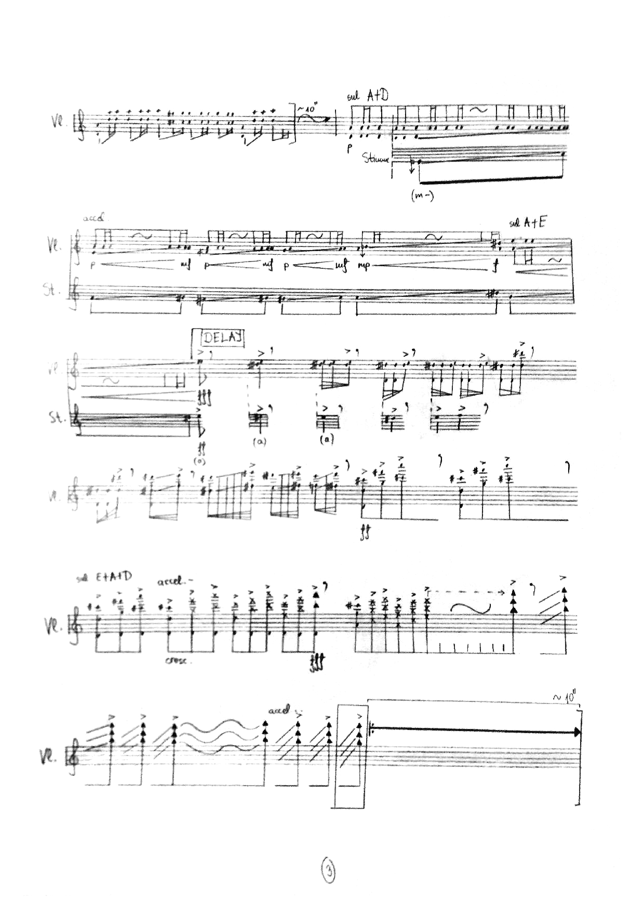
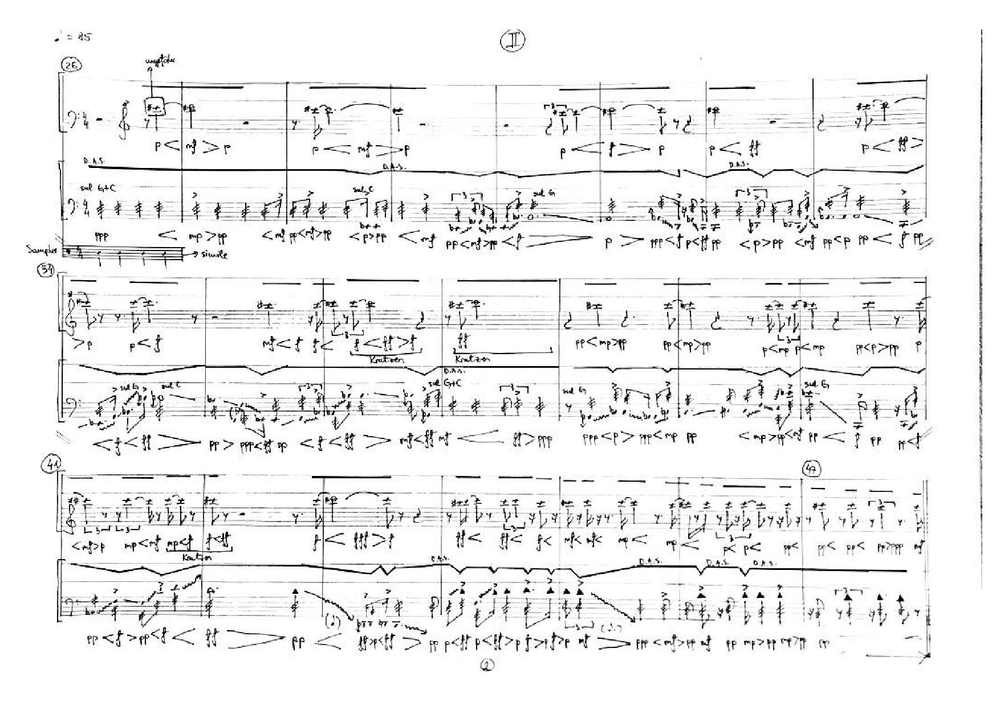

„Skrik II“
for mixed Ensemble (2017/19)
Associated to the inner struggles of a human, which rise every time more and more, despite suppression.
In one moment they reach the highest point. This high point is also suppressed and declines, and then the real culmination:
The SCREAM!
Silence.
Every eruption leaves behz itself lava and ash, which gradually become cold and „quiet“. Sharp impulses reducing into „utopian sound“ - a perfection to which is being strived for:
C-major and human voices.

View here
„ANIMA“
for trombone, cello, percussion, guitar, piano, sampler and live-electronics
(2018)
By observing the two, at first sight, contrasting types of behavior: laughing and crying, and comparing them in a few aspects: psychological, emotional and acoustical, there arises the question about the difference.
The rounded form of the piece shows, on one hand contrast and, on the other the similarity between these two actions due to the unrecognizable border between them and the same elements of acoustic structure.
It leaves us to question dualistic or monistic principles in human nature.

View here
Excerpts, Performances:
„Limes-limits of perception“ (2016), „TREE“ (2018), „Les Images“ (2019)

View here
Music for theatre piece „Watschenmann“, Trailer
violin, voice and live-electronics (2018/19)
View here
String Quartett No.1
(2015)

"300000km/s"
musical theatre for 2 cellos, sampler, 2 actors and amplification
(2015)
